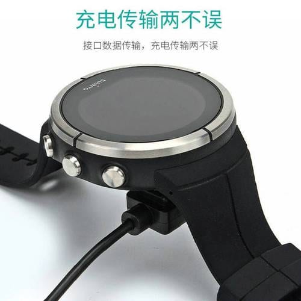

颂拓 Suunto 9 Baro

芬兰血统越野旗舰，超长 GPS 续航硬刚百公里。
客观评测
Suunto 9 Baro 是面向超长距离赛事的旗舰户外表，最大亮点是三档 GPS 省电模式，最高 120 小时续航可覆盖百公里越野全程。内置气压高度计可提供总爬升与暴风警报，蓝宝石玻璃镜面配 100 米防水。实测 Best GPS 精度模式下轨迹稳定，心率监测在稳态区间表现合格。支持 80 余种运动模式与路线面包屑导航，专业运动数据在 Movescount 生态中完整沉淀。
主观点评
9 Baro 散发着典型的北欧工具美学：厚实、低调、可靠。81 克的重量戴上像一块护甲，给长途进山的人十足安全感。触摸屏在雨天或戴手套时不如按键顺手，但物理按键的段落感可靠扎实。它不追求花哨的智能体验，专注把"长距离、恶劣环境、精确数据"这一件事做到极致，是越野跑者与登山爱好者的可靠队友。
优点与不足
- GPS 续航最高 120 小时，超长赛事无忧
- 气压高度计加暴风警报，登山实用
- 蓝宝石镜面加 100 米防水，皮实耐造
- 重量 81 克，日常佩戴偏沉
- 智能功能薄弱，通知体验一般
- 价格接近四千，配件昂贵
参数规格
| 屏幕 | 1.4 英寸彩色触摸屏（蓝宝石玻璃） |
|---|---|
| 传感器 | 光学心率、气压高度计、温度传感器、加速度计 |
| 定位 | GPS / GLONASS / Galileo / 北斗 / QZSS |
| 防水 | 100 米防水 |
| 电池/续航 | GPS 模式 25-120 小时（三档可调），日常约 14 天 |
| 系统 | Suunto 自有系统 |
| 兼容性 | iOS / Android |
| 功能 | 80+ 运动模式、暴风警报、日出日落、路线导航 |
| 表壳 | 钛金属表圈 + 玻璃纤维增强壳体 |
| 重量 | 约 81 克 |